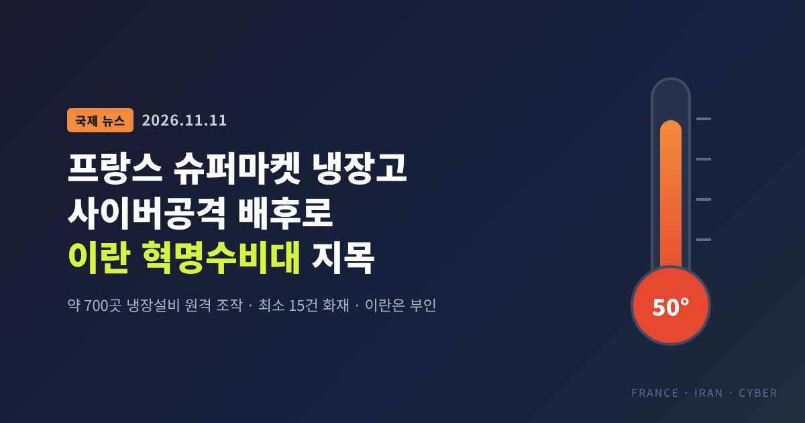
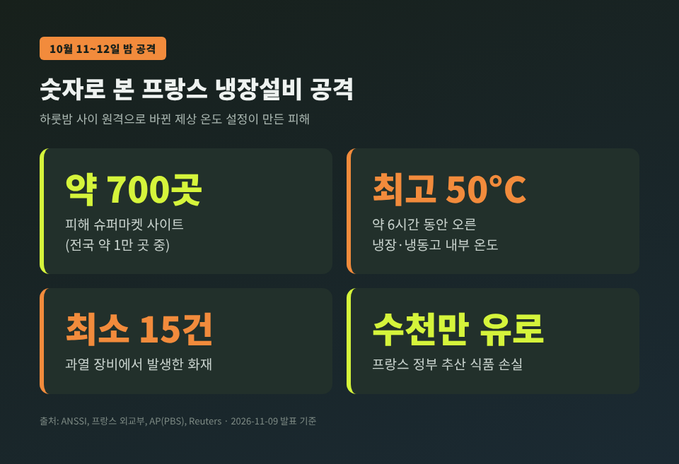
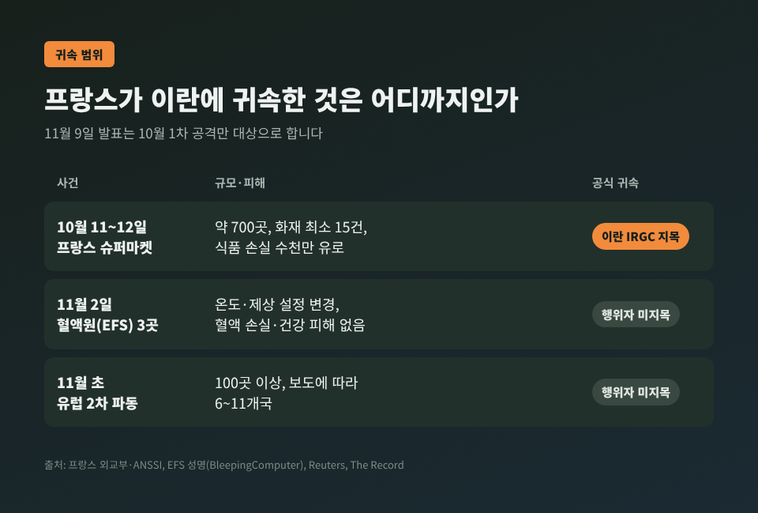
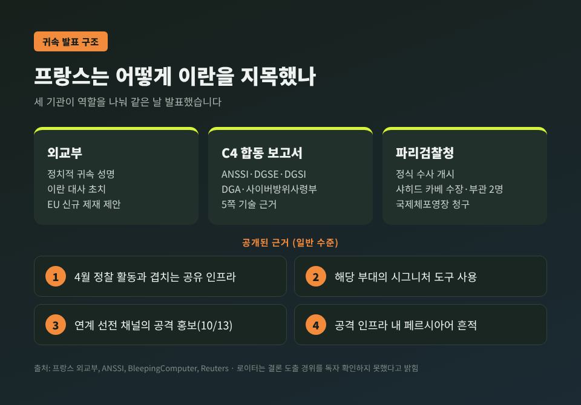
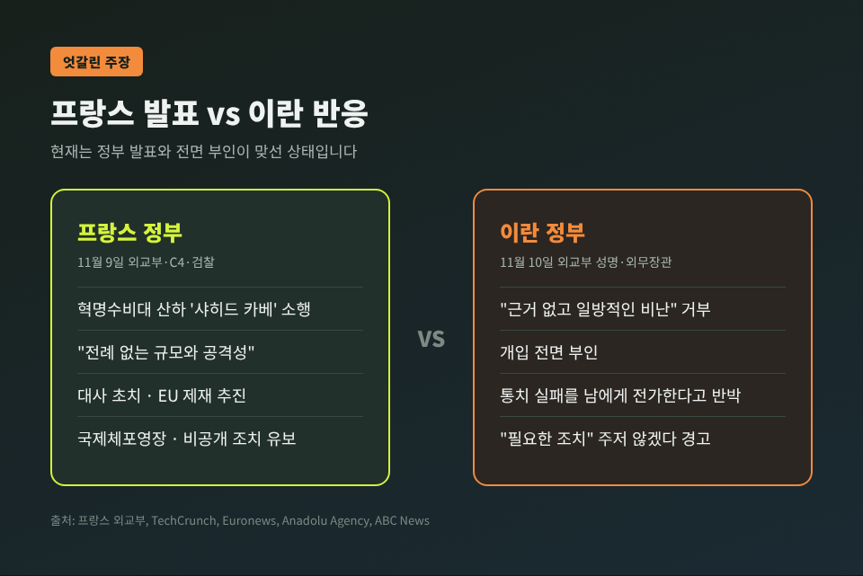
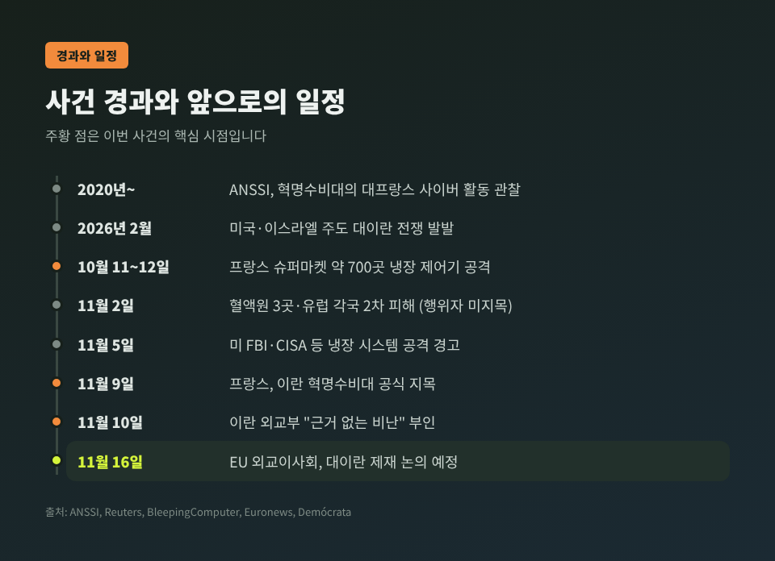

프랑스 슈퍼마켓 냉장고 사이버공격, 이란 혁명수비대 배후로 공식 지목

이번 글에서는 프랑스 정부가 지난 10월 슈퍼마켓 냉장설비를 마비시킨 사이버공격의 배후로 이란을 공식 지목한 일을 정리해 보겠습니다. 결론부터 말씀드리면, 프랑스는 11월 9일(현지) 이란 이슬람혁명수비대(IRGC) 산하 사이버 부대 '샤히드 카베(Shahid Kaveh)'를 지목하고 대사 초치, EU 제재 추진, 국제체포영장 청구에 나섰습니다. 이란은 "근거 없는 일방적 비난"이라며 전면 부인했습니다.
3줄 요약
- 10월 11~12일 밤, 프랑스 슈퍼마켓 약 700곳의 냉장 제어기가 원격 조작돼 식품이 폐기되고 최소 15건의 화재가 났습니다.
- 프랑스 외교부와 정부 합동 사이버위기조정센터(C4)는 이를 이란 혁명수비대 소속 부대의 소행으로 발표했습니다. 다만 11월 초 혈액원·유럽 각국 피해는 이번 귀속 대상이 아닙니다.
- EU는 11월 16일 외교이사회에서 대응을 논의합니다. 냉장고 같은 생활 설비가 국가 간 사이버 충돌의 무대가 됐다는 점이 이번 사건의 핵심입니다.
■ 무슨 일이 있었나 — 하룻밤 사이 데워진 냉장고
공격은 10월 11일 일요일 밤부터 12일 월요일 새벽 사이에 벌어졌습니다. 프랑스 국가정보시스템보안청(ANSSI)은 12일 경보를 받았습니다.
공격자는 인터넷에 연결된 상업용 냉장 제어기에 원격으로 접속했습니다. 그리고 서리를 녹이는 '제상' 기능의 온도 설정을 높게 바꿨습니다. 차갑게 유지돼야 할 냉장·냉동고가 오히려 열을 내기 시작한 셈입니다.
AP 통신에 따르면 내부 온도는 약 6시간 동안 최고 50°C까지 올랐습니다. 프랑스 전체 슈퍼마켓 약 1만 곳 가운데 약 700곳이 피해를 입었습니다. 이 수치는 ANSSI, 파리 검사장 로르 베퀴오, AP·로이터 보도가 모두 일치합니다. 사건 직후에는 250~350곳으로 추정됐으나, 정부 조사에서 두 배 이상으로 불어났습니다.

피해는 상품 폐기에서 끝나지 않았습니다. 과열된 장비에서 최소 15건의 화재가 발생했습니다. 프랑스 외교부는 식품 손실을 "수천만 유로"로 추산했습니다.
까르푸, 르클레르, 앵테르마르셰, 카지노, 쿠페라티브 U, 메트로 등 대형 유통 그룹이 모두 포함됐습니다. 소형 정육점과 도축장 한 곳, 식품가공 협동조합 공장도 피해 목록에 올랐습니다. 같은 시기 소형 수력발전소의 슈나이더일렉트릭 산업장비도 공격받았지만, 영향은 '중간 수준'이었다고 ANSSI는 밝혔습니다.
공격받은 장비 가운데에는 덴마크 댄포스(Danfoss) 제품 일부가 있었습니다. TechCrunch와 로이터는 일부 장비가 더 이상 보안 업데이트를 받지 못하는 구형이었다고 전했습니다.
■ 혈액은행 공격은 이번 발표와 별개입니다
이번 사건을 둘러싸고 혼동이 생기기 쉬운 대목이 있습니다. 11월 2일 프랑스 혈액원(EFS)의 혈액 보관시설 3곳에서도 냉장실 온도·제상 설정이 극단적으로 높게 바뀌는 일이 있었습니다.
다행히 경보 시스템이 빨리 이상을 감지했습니다. 혈장 등 혈액제제는 다른 냉장 설비로 옮겨졌고, EFS는 혈액 손실이나 건강 피해가 없었다고 밝혔습니다. 공격 경로는 EFS가 아니라 냉장장비 공급업체의 원격 모니터링 소프트웨어였습니다.
같은 무렵 벨기에, 스웨덴, 아일랜드, 에스토니아 등 유럽 곳곳 매장에서도 냉장고 이상이 이어졌습니다. 피해 국가 수는 보도마다 6개국에서 11개국까지 엇갈립니다.
중요한 점은 이것입니다. 프랑스가 이란에 공식 귀속한 것은 10월 1차 공격뿐입니다. 혈액원 사건과 11월 유럽 2차 파동은 행위자가 공식 지목되지 않았고, 조사가 진행 중입니다. 일부 해외 매체가 제목에서 둘을 묶었지만, 정부 발표는 그보다 신중합니다.

■ 프랑스는 무엇을 근거로 이란을 지목했나
발표는 세 갈래로 나왔습니다.
- 외교부: 정치적 귀속 성명. 이란 대사 초치, 신규 EU 제재 제안, 공개·비공개 추가 조치 권리 유보를 밝혔습니다.
- C4(사이버위기조정센터): ANSSI, 대외안보총국(DGSE), 국내안보총국(DGSI), 방위사업청(DGA), 사이버방위사령부가 함께 만든 5쪽 분량 기술 보고서를 냈습니다.
- 파리검찰청: 정식 수사를 개시하고 샤히드 카베 수장과 부관 2명 등에 대한 국제체포영장을 청구했습니다.
장노엘 바로 외무장관은 "이 행위의 책임이 이슬람혁명수비대에 있음을 확인할 수 있다"고 말했습니다. 그는 이번 일을 "전례 없는 규모와 공격성"을 지닌, 프랑스 영토에 대한 첫 대규모 사보타주로 규정했습니다.

공개된 근거는 일반적인 수준입니다. 공격 인프라가 지난 4월 같은 부대의 산업제어 장비 정찰 활동과 겹친다는 점, 이 부대가 즐겨 쓰는 도구가 쓰였다는 점이 제시됐습니다. 부대와 연계된 선전 채널이 10월 13일 공격을 홍보했고, 인프라에서 페르시아어 흔적이 나왔다는 점도 포함됐습니다. AP는 이란 내 장치와 연결된 IP 주소도 확인됐다고 보도했습니다.
검찰과 보도로 이름이 드러난 인물은 세 명입니다. 혁명수비대 전자·사이버센터장으로 지목된 하미드 레자 라슈가리안, 그리고 마흐디 라슈가리안과 레자 살라르반드입니다.
한계도 분명히 짚어둘 필요가 있습니다. 로이터는 프랑스가 어떤 경로로 결론에 이르렀는지 정확히 확인할 수 없었다고 밝혔습니다. 사이버 귀속은 원래 정보기관 자료에 기대는 경우가 많아, 외부에서 전부 검증하기는 어렵습니다.
■ 이란은 "근거 없는 비난"이라며 부인
이란 외교부는 10일 서면 성명을 냈습니다. 프랑스의 "근거 없고 일방적인 비난"을 단호히 거부한다는 내용입니다. 불법적인 외국 활동에 대해 필요한 조치를 주저하지 않겠다는 경고도 덧붙였습니다.
아바스 아라그치 외무장관은 X(옛 트위터)에서 더 날을 세웠습니다. 프랑스 정부가 냉장고 하나 관리하지 못하면서 자국 통치 실패를 남에게 돌린다는 취지였습니다.

양측 주장은 정면으로 엇갈립니다. 현재로서는 프랑스 정부의 발표와 이란의 부인이 맞서 있는 상태로 보는 것이 정확합니다.
■ 왜 중요한가 — 생활 설비가 전장이 됐다
예전에는 국가 배후 해킹이라 하면 정보 탈취나 서버 마비가 먼저 떠올랐습니다. 지금은 슈퍼마켓 냉장고의 온도 설정이 표적입니다.
이번 공격은 화면 속 데이터가 아니라 물리적 결과를 노렸습니다. 식품이 상하고, 불이 나고, 혈액 보관시설까지 위협받았습니다. 프랑스 외교부가 이를 "순수한 사보타주 목적의 첫 사이버 공세"라 부른 이유입니다.
냉장 제어기는 공장 설비를 다루는 운영기술(OT)과 인터넷에 연결된 사물(IoT)의 경계에 있습니다. 값싸고, 오래 쓰고, 보안 업데이트에서 소외되기 쉽습니다. 이런 장비가 인터넷에 그대로 노출돼 있으면, 수백 곳을 하룻밤에 건드리는 일이 가능해집니다.
미국 연방수사국(FBI)과 사이버보안·인프라보안청(CISA)도 11월 5일 보건·농무·교통 당국과 함께 경고를 냈습니다. 냉장 관리 시스템을 겨냥한 공격이 진행 중이라는 내용입니다. 의료, 식품 생산, 유통, 냉장창고, 화학, 운송이 위험 분야로 꼽혔습니다.
■ 배경 — 전쟁, 그리고 반복된 이란발 사이버 활동
이번 일은 갑자기 나온 것이 아닙니다. ANSSI는 2020년부터 혁명수비대의 대프랑스 사이버 활동을 관찰해 왔다고 밝혔습니다. 2023년 풍자 주간지 샤를리 에브도의 온라인 상점 변조와 데이터 탈취, 2024년 7월 파리올림픽을 앞둔 디스플레이 업체 침투가 대표적입니다. 이 두 건은 또 다른 부대 '샤히드 쇼스타리(에메넷 파사르가드)'의 소행으로 지목됐고, EU는 2026년 3월 에메넷 파사르가드를 제재했습니다.
샤히드 카베는 미국 정부가 '사이버어벤저스(CyberAv3ngers)'로 불러온 조직과 같은 곳으로 평가됩니다. 이 이름은 2023년 말 미국 수처리 시설 등에서 인터넷에 노출된 이스라엘산 산업제어장치(PLC)를 침해한 사건으로 알려졌습니다. 당시 CISA·FBI·NSA와 이스라엘 당국은 합동 권고를 냈고, 미국은 관련 혁명수비대 관계자 6명에게 최대 1,000만 달러의 현상금을 걸었습니다.
중동 정세도 빼놓을 수 없습니다. 2026년 2월 미국·이스라엘 주도의 대이란 전쟁이 시작됐고, 이란 최고지도자가 사망했습니다. 이후 미국 로스앤젤레스 교통망(3월), 수처리 시설(7월), 미국행 선박(8월) 공격이 이란 연계 세력의 소행으로 지목됐습니다. 8월에는 미군 매점 최소 6곳의 냉장고가 고장 나 펜타곤이 사이버공격 여부를 조사 중이라고 로이터는 전했습니다. 다만 미국·프랑스·유럽 사건 사이의 연관성은 아직 확인되지 않았습니다.
■ 국제법과 보복 논쟁, EU의 선택
프랑스 외교부는 이번 공격이 국제법에 반하며, 이란도 지지한 유엔의 '사이버 공간 책임 있는 국가 행동 규범'을 어겼다고 명시했습니다. 그러면서 "필요하고 비례적인" 공개·비공개 조치를 취할 권리를 유보했습니다. 비공개 조치라는 표현은 사이버 영역의 맞대응 가능성까지 열어둔 것으로 읽힐 여지가 있습니다.
다만 사이버 공격에 대한 국가의 대응 범위는 국제적으로 합의가 충분하지 않은 영역입니다. 대응 수위가 높아질수록 확전 우려도 커집니다. 이란이 "필요한 조치"를 경고한 만큼, 맞불이 이어질 가능성도 배제할 수 없습니다.
EU 차원의 움직임도 빨라지고 있습니다. EU 집행위원회는 11월 3일 피해 회원국, 유로폴, 유럽연합사이버보안청(ENISA) 등과 조정회의를 열었습니다. 카야 칼라스 EU 외교안보 고위대표는 "귀속이 이뤄진다면 대응은 단호해야 한다"고 말했습니다. EU는 "신속하고 단합된 대응"을 추구한다고 밝혔습니다.

■ 한국에 주는 시사점
한국에서 이번 공격과 관련된 피해가 보고된 것은 아직 확인되지 않았습니다. 그래도 남의 일로만 보기는 어렵습니다. 편의점, 대형마트, 물류센터, 병원 혈액·백신 보관 시설까지, 원격 관리되는 냉장 설비는 국내에도 흔합니다.
FBI·CISA 권고는 운영자가 점검할 기본 수칙을 이렇게 정리합니다.
- 냉장 제어기를 공용 인터넷에서 분리합니다.
- 꼭 필요한 원격 접속은 안전한 방식으로만 허용합니다.
- 기본 비밀번호를 바꿉니다.
- 보안 업데이트를 적용하고, 지원이 끝난 구형 장비는 교체를 검토합니다.
- 운영 설비망과 업무망을 분리합니다.
- 장비가 안전 온도 범위를 벗어나 작동하지 못하도록 상한을 걸어 둡니다.
혈액원 사례처럼 온도 경보가 제때 울리면 피해를 막을 수 있다는 점도 눈여겨볼 대목입니다. 공급업체의 원격 관리 소프트웨어가 공격 경로가 될 수 있다는 점 역시 기억해 둘 만합니다.
■ 앞으로의 전망
가장 가까운 일정은 11월 16일 EU 외교이사회입니다. 27개 회원국 외무장관이 모이는 자리에서 이란 관련 개인·단체에 대한 신규 제재가 논의될 예정입니다. 프랑스 검찰의 국제체포영장이 실제 신병 확보로 이어질 가능성은 낮지만, 이동과 금융 활동을 묶는 압박 수단은 됩니다.
남은 질문도 있습니다. 11월 혈액원·유럽 2차 파동의 배후가 누구인지, 미국 사례와 연결되는지는 아직 공식 결론이 없습니다. 추가 귀속 발표가 나온다면 파장은 프랑스를 넘어 유럽 전체로 커질 수 있습니다.
정리하면 이렇습니다. 이번 사건은 국가 간 갈등이 일상의 설비로 내려온 첫 대규모 사례 가운데 하나입니다. 귀속의 최종 진위를 외부에서 다 가릴 수는 없지만, 인터넷에 노출된 낡은 장비가 위험하다는 사실만큼은 분명해졌습니다.
"가장 평범한 기계가 가장 약한 고리일 수 있다."
우리 주변의 냉장고는 안전하냐고 물으신다면, 이제는 확인해 봐야 한다고 답하겠습니다.
참고 자료
- 프랑스 유럽·외교부, "Déclaration d'attribution à l'Iran de cyberattaques visant la France", 2026-11-09 — https://www.diplomatie.gouv.fr/fr/presse-et-ressources/decouvrir-et-informer/actualites/declaration-d-attribution-a-l-iran-de-cyberattaques-visant-la-france
- ANSSI, "Campagnes de déstabilisation et sabotage menées à l'encontre des intérêts français par la République islamique d'Iran", 2026-11-09 — https://cyber.gouv.fr/actualites/campagnes-de-déstabilisation-et-sabotage-menées-à-lencontre-des-intérêts-français-par-la-république-islamique-diran/
- PBS NewsHour(AP), "France blames Iran for last month's cyberattack on supermarket fridges", 2026-11-09 — https://www.pbs.org/newshour/world/france-blames-iran-for-last-months-cyberattack-on-supermarket-fridges
- TechCrunch(Yahoo News 전재), "France blames Iran for mass-hacks targeting freezers in grocery stores and blood banks", 2026-11-09 — https://www.yahoo.com/news/world/articles/france-blames-iran-mass-hacks-191924516.html
- Reuters(Khaleej Times 전재), "France accuses IRGC of cyberattack on supermarket fridges, summons Iran ambassador", 2026-11-09 — https://www.khaleejtimes.com/world/france-accuses-irgc-cyberattack-supermarket-fridges
- The Record, "France blames Iran for fridge cyberattacks, says some caused fires", 2026-11-09 — https://therecord.media/france-blames-iran-for-fridge-cyberattacks
- BleepingComputer, "France blames Iranian hackers for supermarket attacks that sparked fires", 2026-11-09 — https://bleepingcomputer.com/news/security/france-blames-iranian-hackers-for-supermarket-attacks-that-sparked-fires
- ABC News, "What to know about 'unprecedented' cyberattacks on refrigerators in France", 2026-11-10 — https://abcnews.com/International/unprecedented-cyberattacks-refrigerators-france/story?id=138028066
- Euronews, "Iran rejects France's 'baseless accusations' on fridge cyberattacks", 2026-11-11 — https://www.euronews.com/2026/11/11/iran-rejects-frances-baseless-accusations-on-fridge-cyberattacks
- Anadolu Agency, "Iran denies French accusations of cyberattacks on supermarket refrigeration systems", 2026-11-10 — https://www.aa.com.tr/en/middle-east/iran-denies-french-accusations-of-cyberattacks-on-supermarket-refrigeration-systems/4119026
- BleepingComputer, "Cyberattack disrupts blood storage refrigeration systems in France", 2026-11-04 — https://bleepingcomputer.com/news/security/cyberattack-disrupts-blood-storage-refrigeration-systems-in-france
- BleepingComputer, "FBI, CISA warn of cyberattacks targeting refrigeration systems", 2026-11-05 — https://bleepingcomputer.com/news/security/fbi-cisa-warn-of-cyberattacks-targeting-refrigeration-systems
- Demócrata, "Kallas proposes new sanctions against Iran for cyberattacks on European supermarkets", 2026-11-09 — https://www.democrata.es/en/international/kallas-proposes-new-sanctions-against-iran-for-cyberattacks-on-european-supermarkets/
- CISA, "CISA and Partners Release Joint Advisory on IRGC-Affiliated Cyber Actors Exploiting PLCs", 2023-12-01 — https://www.cisa.gov/news-events/alerts/2023/12/01/cisa-and-partners-release-joint-advisory-irgc-affiliated-cyber-actors-exploiting-plcs
- YTN, 프랑스 이란 혁명수비대 냉장고 사이버공격 지목 보도, 2026-11-10 — https://www.ytn.co.kr/_ln/0104_202611100315578370
#프랑스이란사이버공격 #이란혁명수비대 #슈퍼마켓냉장고해킹 #샤히드카베 #ANSSI #산업제어보안 #콜드체인 #EU제재